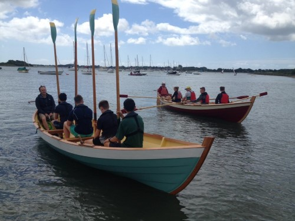
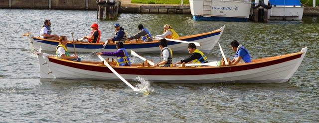

What is a skiff?
The skiff means different boats around the world but we mean two types of boat.
The Oarsome Skiff
16 foot, 3 man rowing and sailing skiff
An Oarsome Chance design commission from renowned marine architect Paul Fisher a master of stitch and tape designs since the 1980’s
Accessible build
- For all using “stitch and tape”
- 100 man hrs. build time, requiring minimal boat building skills Fits in a term as an “after school project” for 2 hrs. per week
Other options
- 3 levels of build complexity available: Stitch and tape, lap strake clinker or full frame clinker options
- Sailing rig progression module
- Green propulsion progression module
- STEM and KS3 Maths appropriate design
St Ayles Skiff
pronounced 'St Isles'
A Scottish fisheries commissioned design from renowned marine architect Iain Oughtred. This is a traditional Celtic longboat double ender 6 man (cox plus 4 rowers plus bow passenger) rowing skiff.
- An accessible to all CNC Kit offering lap strake mould clinker build
- 450 man hours build time with a minimal boat building skill set requirement.
- Inexpensive and accessible to amateur and school children projects
Lots of photos of people enjoying St Ayles skiffs (Flickr.com)


St Ayles skiffs around the UK
A popular community activity with 80 plus UK community St Ayles clubs. 'Coastal rowing craze inspired by traditional Scottish fishing skiff' There is international interest and take up, creating a growing competitive regatta and social scene.
Every 3 Years there is a World Skiffie Championships. Strangford Lough July 2016 Nice gallery section.
Recent work by Oarsome Chance
- 2 St Ayles built at Scottish Maritime Museum creating 2 apprenticeships. Now on loan to Langstone Cutters Community Rowing Club (Havant) to seed interest in school and community rowing
- 2 St Ayles builds at Releasing Potential Special Outdoor Learning School, Havant
- 2 St Ayles builds at IBTC (International Boat Building College, Portsmouth) as part of their community outreach programme
- 1 St Ayles and 2 Oarsome Skiff builds in Annex Centre at Park Community School (Leigh Park, Havant) as part of their co curricular enrichment and vocational learning programmes